Q3: PROTAC reversal
Dominique Paul
2022-09-21
Last updated: 2022-09-21
Checks: 6 1
Knit directory: GR-PROTAC-analysis/analysis/
This reproducible R Markdown analysis was created with workflowr (version 1.7.0). The Checks tab describes the reproducibility checks that were applied when the results were created. The Past versions tab lists the development history.
The R Markdown file has unstaged changes. To know which version of the R Markdown file created these results, you’ll want to first commit it to the Git repo. If you’re still working on the analysis, you can ignore this warning. When you’re finished, you can run wflow_publish to commit the R Markdown file and build the HTML.
Great job! The global environment was empty. Objects defined in the global environment can affect the analysis in your R Markdown file in unknown ways. For reproduciblity it’s best to always run the code in an empty environment.
The command set.seed(20220515) was run prior to running the code in the R Markdown file. Setting a seed ensures that any results that rely on randomness, e.g. subsampling or permutations, are reproducible.
Great job! Recording the operating system, R version, and package versions is critical for reproducibility.
Nice! There were no cached chunks for this analysis, so you can be confident that you successfully produced the results during this run.
Great job! Using relative paths to the files within your workflowr project makes it easier to run your code on other machines.
Great! You are using Git for version control. Tracking code development and connecting the code version to the results is critical for reproducibility.
The results in this page were generated with repository version 4255935. See the Past versions tab to see a history of the changes made to the R Markdown and HTML files.
Note that you need to be careful to ensure that all relevant files for the analysis have been committed to Git prior to generating the results (you can use wflow_publish or wflow_git_commit). workflowr only checks the R Markdown file, but you know if there are other scripts or data files that it depends on. Below is the status of the Git repository when the results were generated:
Ignored files:
Ignored: .DS_Store
Ignored: analysis/.DS_Store
Ignored: analysis/.Rhistory
Ignored: analysis/docs/.DS_Store
Ignored: analysis/figure/
Ignored: data/.DS_Store
Ignored: data/EOS_files/
Ignored: data/Formatted_Candidate_ETG_20200305_TAD10Kb.tsv
Ignored: data/reddy_bigwig_DEX12h_r123.bigWig
Ignored: data/reddy_bigwig_DEX2h_r123.bigWig
Ignored: data/reddy_bigwig_DEX6h_r123.bigWig
Ignored: data/reddy_bigwig_JUNB_DEX12h_r123.bigWig
Ignored: data/reddy_rna_DEX2h_r1.tsv
Ignored: data/reddy_rna_DEX2h_r2.tsv
Ignored: data/reddy_rna_DEX2h_r3.tsv
Ignored: data/reddy_rna_DEX2h_r4.tsv
Ignored: data/single_replicate_peaks/.DS_Store
Ignored: data/single_replicate_peaks/control/
Ignored: data/single_replicate_peaks/dex12h/
Ignored: data/single_replicate_peaks/dex2h/
Ignored: data/single_replicate_peaks/peaks/.DS_Store
Ignored: output/.DS_Store
Ignored: output/Files/
Untracked files:
Untracked: analysis/Q2b-TF-Binding-to-DE-genes-2h.Rmd
Untracked: data/00_paper_figures/
Unstaged changes:
Modified: analysis/01_Results.Rmd
Modified: analysis/Q11-MR_paper.Rmd
Deleted: analysis/Q2b-TF-Binding-to-DE-genes.Rmd
Modified: analysis/Q3-PROTAC-reversal.Rmd
Modified: analysis/admin.Rmd
Note that any generated files, e.g. HTML, png, CSS, etc., are not included in this status report because it is ok for generated content to have uncommitted changes.
These are the previous versions of the repository in which changes were made to the R Markdown (analysis/Q3-PROTAC-reversal.Rmd) and HTML (docs/Q3-PROTAC-reversal.html) files. If you’ve configured a remote Git repository (see ?wflow_git_remote), click on the hyperlinks in the table below to view the files as they were in that past version.
| File | Version | Author | Date | Message |
|---|---|---|---|---|
| Rmd | 748f409 | dominique-paul-uzh | 2022-09-19 | updates september |
| Rmd | fd8956d | dominique-paul-uzh | 2022-09-05 | updates september |
| html | fd8956d | dominique-paul-uzh | 2022-09-05 | updates september |
| Rmd | 4a4e1e6 | dominique-paul-uzh | 2022-07-09 | final changes for submission in main files |
| html | 4a4e1e6 | dominique-paul-uzh | 2022-07-09 | final changes for submission in main files |
| Rmd | dd2072e | dominique-paul-uzh | 2022-06-22 | added remaining questions |
| html | dd2072e | dominique-paul-uzh | 2022-06-22 | added remaining questions |
| Rmd | 207afa6 | dominique-paul-uzh | 2022-06-21 | added question 3 |
Question 3:
Our RNA: are there any genes that treated by the PROTAC before/after DEX that could be reversed but which could not by the inhibitors or vice versa?
We have performed experiments where we first exposed cells to either (1) DEX, (2) inhibitors, or (3) KH PROTAC for a substantial time and then added inhibitors or the KH PROTAC in case (1) or DEX in cases (2) and (3). We would like to see whether the genes which were activated by DEX but then returned to a normal expression by the KH PROTAC, where a similar treatment by the inhibitors could not lead to such an effect and vice versa.
In our RNAseq, are there any genes that Protac after dex or before dex could reverse or partially reverse that cort113 or mifepristone could not? do these gene show GR binding according to Reddy’s chip data?
res_int_all <- readRDS(file="../data/results/DE_our_data.rds")
names(res_int_all) [1] "16h Cort113 > 2h DEX+Cort113" "16h DMSO > 2h DEX+DMSO"
[3] "16h KH-103 > 2h DEX+KH-103" "16h MIF > 2h DEX+MIF"
[5] "18h Cort113" "18h KH-103"
[7] "18h MIF" "2h DEX > 16h DEX+Cort113"
[9] "2h DEX > 16h DEX+DMSO" "2h DEX > 16h DEX+KH-103"
[11] "2h DEX > 16h DEX+MIF" # The threshold we choose for which values count as DE or not
fdr_thresh <- 0.05
# Load the control data for the 2+16 experiment
control216 <- res_int_all[["2h DEX > 16h DEX+DMSO"]]
control162 <- res_int_all[["16h DMSO > 2h DEX+DMSO"]]2h > 16h
Def. 1: We consider “reversed by inhibitor” to mean: “Is DE in ‘2h DEX > 16h DEX+DMSO’ but not in ‘2h DEX > 16h DEX+Cort113’”. We look at both inhibitors and the PROTAC
# Load inhibitors/Protac data
cort216 <- res_int_all[["2h DEX > 16h DEX+Cort113"]]
mif216 <- res_int_all[["2h DEX > 16h DEX+MIF"]]
protac216 <- res_int_all[["2h DEX > 16h DEX+KH-103"]]
# merge the respective FDRs onto DF
merged216 <- control216 %>%
tibble::rownames_to_column() %>%
left_join(cort216 %>%
tibble::rownames_to_column() %>%
dplyr::select(rowname, logFC, FDR), suffix=c("","_cort"), by="rowname") %>%
left_join(mif216 %>%
tibble::rownames_to_column() %>%
dplyr::select(rowname, logFC, FDR), suffix=c("","_MIF"), by="rowname") %>%
left_join(protac216 %>%
tibble::rownames_to_column() %>%
dplyr::select(rowname, logFC, FDR), suffix=c("","_KH"), by="rowname")
# Using a FDR of 0.05, how many clear reversals do we have?
merged216$cort_reversed <- ifelse(merged216$FDR < 0.05 & merged216$FDR_cort >= 0.05, TRUE, FALSE)
merged216$MIF_reversed <- ifelse(merged216$FDR < 0.05 & merged216$FDR_MIF >= 0.05, TRUE, FALSE)
merged216$KH_reversed <- ifelse(merged216$FDR < 0.05 & merged216$FDR_KH >= 0.05, TRUE, FALSE)
# transform from wide to long
merged216_long <- reshape2::melt(merged216,
id.vars="rowname",
measure.vars=c("logFC", "logFC_cort", "logFC_MIF", "logFC_KH")) %>%
mutate(Group=factor(variable))
levels(merged216_long$Group) <- c("Control", "Cort", "MIF", "KH")
# sort rownames in descending order of control logFCs
rnames <- merged216_long[merged216_long$Group == "Control",] %>% arrange(desc(value)) %>% pull(rowname)
merged216_long$rowname <- factor(merged216_long$rowname, levels=rnames)
# unique protac reversals
merged216 <- merged216 %>% arrange(logFC)
rnames_kh_reversal <- merged216[merged216$KH_reversed == TRUE &
merged216$cort_reversed == F &
merged216$MIF_reversed == F,"rowname"]
merged216[merged216$rowname %in% rnames_kh_reversal,"KH_reversed"] <- TRUEplt1 <- ggplot(merged216_long[merged216_long$rowname %in% rnames_kh_reversal,]) +
geom_point(aes(x=rowname, y=value, color=Group)) +
theme_ipsum_rc() +
labs(title="Genes reversed by Protac but not by inhibitors",
subtitle="2h DEX > 16h DEX + Inhibitor/Protac",
x="", y="") +
theme(axis.text.x = element_text(angle = 90, vjust = 0.5, hjust=1)) +
scale_color_manual(values=c(Control="Black", Cort="#7ef2b4", MIF="#dda6ff", KH="#ff000d"))
plt1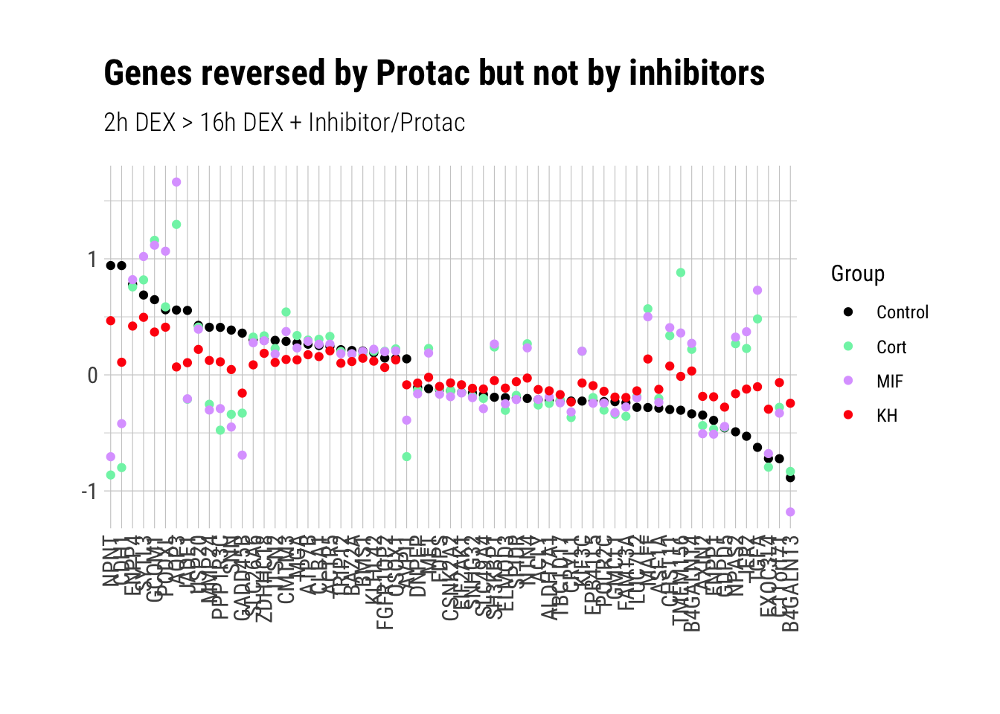
ggsave(file="../docs/assets/Q3_1_reversal216.png", plt1, width=12, height=7)Sign flips / reversals
We search for cases where an inhibitor or the protac has flipped the sign of a logFC. We filter for genes where the gene was DE in both the comparison with the control as well as inhibitor/protac. We apply the additional filter than the sign of the logFC has changed with reference to the control experiment.
# Check for flips in sign
merged216$cort_flipped <- ifelse(merged216$FDR < 0.05 & merged216$FDR_cort < 0.05 &
((merged216$logFC * merged216$logFC_cort) < 0), TRUE, FALSE)
merged216$MIF_flipped <- ifelse(merged216$FDR < 0.05 & merged216$FDR_MIF < 0.05 &
((merged216$logFC * merged216$logFC_MIF) < 0), TRUE, FALSE)
merged216$KH_flipped <- ifelse(merged216$FDR < 0.05 & merged216$FDR_KH < 0.05 &
((merged216$logFC * merged216$logFC_KH) < 0), TRUE, FALSE)
plot_logFCs_216 <- function(rownames_subset, title){
# cort
plt <- ggplot(merged216_long[merged216_long$rowname %in% rownames_subset,]) +
geom_point(aes(x=rowname, y=value, color=Group)) +
theme_ipsum_rc() +
labs(title=title,
subtitle="2h DEX > 16h DEX + Inhibitor/Protac",
x="", y="") +
theme(axis.text.x = element_text(angle = 90, vjust = 0.5, hjust=1)) +
scale_color_manual(values=c(Control="Black", Cort="#7ef2b4", MIF="#dda6ff", KH="#ff000d"))
plt
}
rnames_flipped_cort <- merged216 %>% dplyr::filter(cort_flipped == TRUE) %>% pull(rowname)
rnames_flipped_mif <- merged216 %>% dplyr::filter(MIF_flipped == TRUE) %>% pull(rowname)
rnames_flipped_kh <- merged216 %>% dplyr::filter(KH_flipped == TRUE) %>% pull(rowname)
plt_flipped_cort <- plot_logFCs_216(rnames_flipped_cort, "Genes flipped by cort")
plt_flipped_mif <- plot_logFCs_216(rnames_flipped_mif, "Genes flipped by MIF")
plt_flipped_kh <- plot_logFCs_216(rnames_flipped_kh, "Genes flipped by KH")
# Save all plots
ggsave(file="../docs/assets/Q3_1_flipped_cort_216.png", plt_flipped_cort, width=12, height=7)
ggsave(file="../docs/assets/Q3_1_flipped_mif_216.png", plt_flipped_mif, width=12, height=7)
ggsave(file="../docs/assets/Q3_1_flipped_kh_216.png", plt_flipped_kh, width=12, height=7)
# Show all plots
cat("\n\n### Flipped effects {.tabset} \n\n")Flipped effects
cat("\n\n#### Cort \n\n")Cort
plt_flipped_cort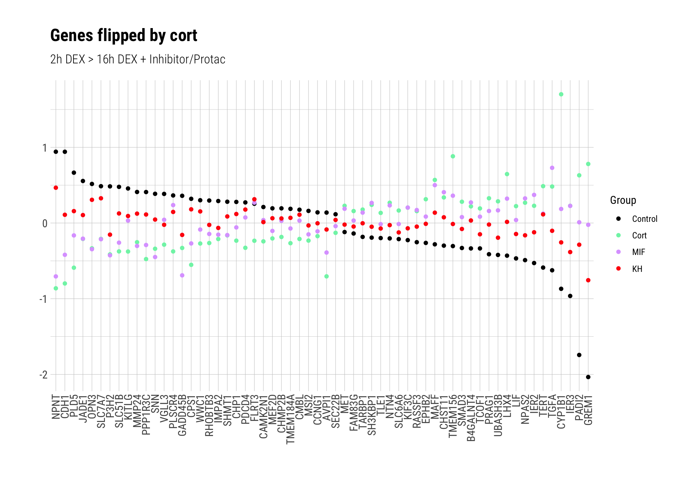
| Version | Author | Date |
|---|---|---|
| fd8956d | dominique-paul-uzh | 2022-09-05 |
cat("\n\n#### MIF \n\n")MIF
plt_flipped_mif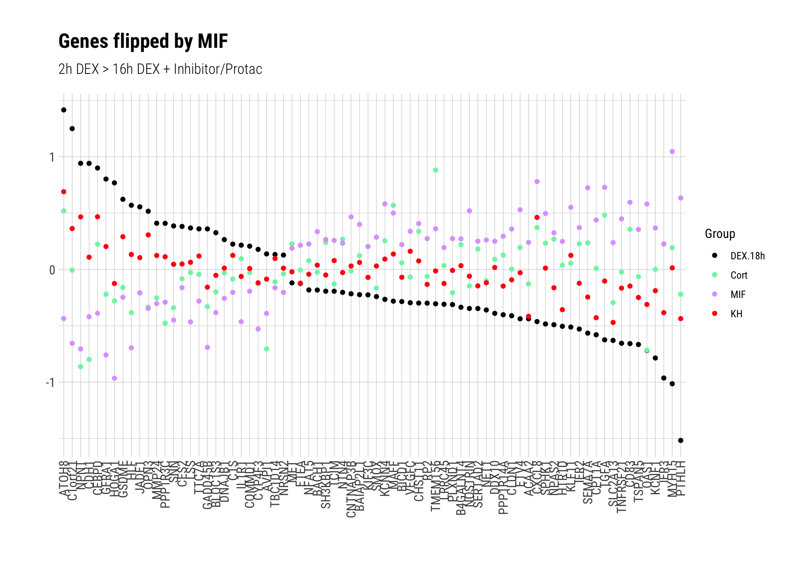
| Version | Author | Date |
|---|---|---|
| fd8956d | dominique-paul-uzh | 2022-09-05 |
cat("\n\n#### KH \n\n")KH
plt_flipped_kh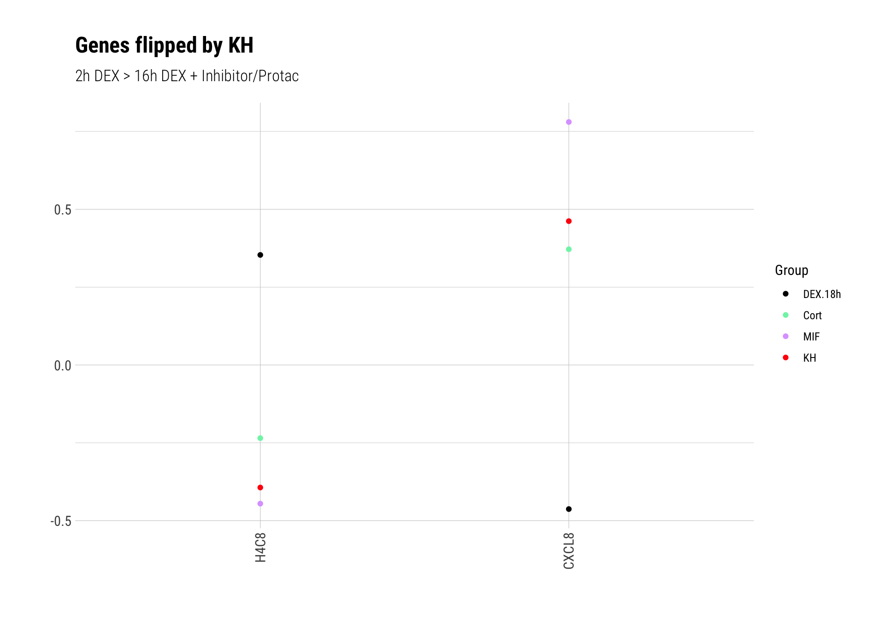
| Version | Author | Date |
|---|---|---|
| fd8956d | dominique-paul-uzh | 2022-09-05 |
# plot genes flipped by the respective markers only
rnames_flipped_cort_only <- rnames_flipped_cort[!(rnames_flipped_cort %in% c(rnames_flipped_mif, rnames_flipped_kh))]
rnames_flipped_mif_only <- rnames_flipped_mif[!(rnames_flipped_mif %in% c(plt_flipped_kh, rnames_flipped_kh))]
rnames_flipped_kh_only <- rnames_flipped_mif[!(rnames_flipped_mif %in% c(rnames_flipped_mif, plt_flipped_cort))]
plt_flipped_cort_only <- plot_logFCs_216(rnames_flipped_cort_only, "Genes flipped by cort only")
plt_flipped_mif_only <- plot_logFCs_216(rnames_flipped_mif_only, "Genes flipped by MIF only")
plt_flipped_kh_only <- plot_logFCs_216(rnames_flipped_kh_only, "Genes flipped by KH only")
# Save all plots
ggsave(file="../docs/assets/Q3_1_flipped_cort_only_216.png", plt_flipped_cort_only, width=12, height=7)
ggsave(file="../docs/assets/Q3_1_flipped_mif_only_216.png", plt_flipped_mif_only, width=12, height=7)
ggsave(file="../docs/assets/Q3_1_flipped_kh_only_216.png", plt_flipped_kh_only, width=12, height=7)
# Show all plots
cat("\n\n### Flipped effects with unique genes per treatment {.tabset} \n\n")Plots from Mahshids summary
1. Only those genes which are significant in Dex 18h, ns in 2h>KH103 but are significant in the same direction (+/-) as Dex 18h in 2h dex>mif and 2h dex>cort113
merged216$category1 <- (merged216$FDR < 0.05) &
(merged216$FDR_KH > 0.05) &
(merged216$FDR_MIF < 0.05) & (merged216$FDR_cort < 0.05) &
(merged216$logFC_MIF * merged216$logFC_cort > 0) & # checks that mif and cort have same sign
(merged216$logFC * merged216$logFC_cort > 0) # checks that mif and 2h dex have the same sign
rnames_flipped_cat1 <- merged216 %>% dplyr::filter(category1 == TRUE) %>% pull(rowname)
# fig 6d.2a
plot_logFCs_216(rnames_flipped_cat1, "Category 1")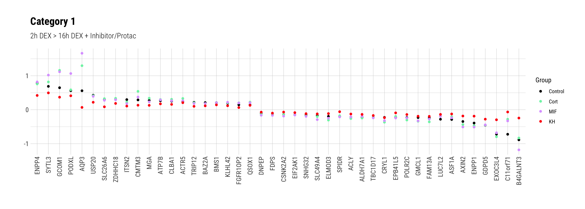
ggsave(filename="../data/00_paper_figures/6d2a.png", width = 14, height=5)2. Only those genes which are significant in Dex 18h, ns in 2h dex> KH103 but are significant in the opposite direction as Dex 18h in 2h dex>mif and 2h dex > cort113
merged216$category2 <- (merged216$FDR < 0.05) &
(merged216$FDR_KH > 0.05) &
(merged216$FDR_MIF < 0.05) & (merged216$FDR_cort < 0.05) &
(merged216$logFC_MIF * merged216$logFC_cort > 0) & # checks that mif and cort have same sign
(merged216$logFC * merged216$logFC_cort < 0) # checks that mif and 2h dex have different sign
rnames_flipped_cat2 <- merged216 %>% dplyr::filter(category2 == TRUE) %>% pull(rowname)
# fig 6d.2b
plot_logFCs_216(rnames_flipped_cat2, "Category 2")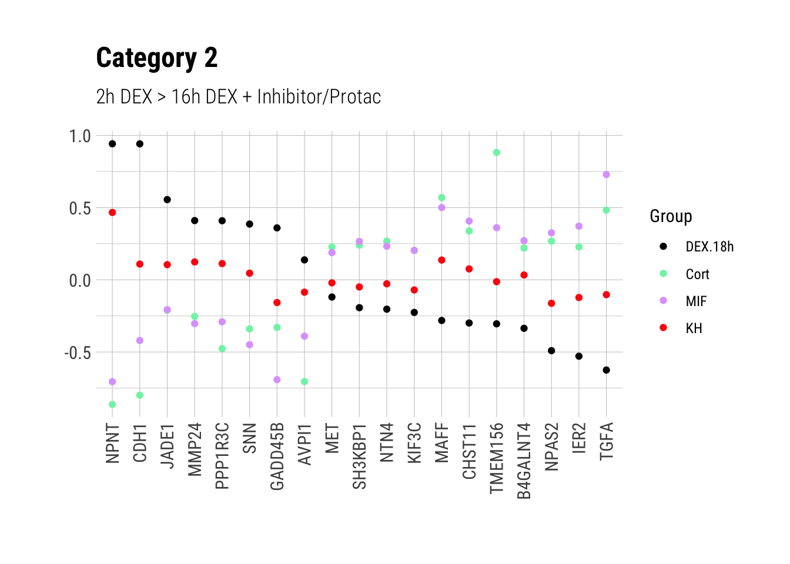
ggsave(filename="../data/00_paper_figures/6d2b.png", width = 7, height=5)3. Only those genes which are significant in Dex 18h, and are ns or significant in the same direction as Dex 18h for 2h dex>mif and 2h dex>cort113 but are significant in the opposite direction as Dex 18h in 2h dex>KH-103
merged216$category3 <- (merged216$FDR < 0.05) &
(merged216$logFC * merged216$logFC_MIF > 0) & # 2h DEX and MIF point in same direction
(merged216$logFC * merged216$logFC_cort > 0) & # 2h DEX and cort point in same direction
(merged216$logFC * merged216$logFC_KH < 0) & # 2h DEX and KH have different logFC signs
(merged216$FDR_KH > 0) # KH is significant
rnames_flipped_cat3 <- merged216 %>% dplyr::filter(category3 == TRUE) %>% pull(rowname)
# fig 6d.2c
plot_logFCs_216(rnames_flipped_cat3, "Category 3")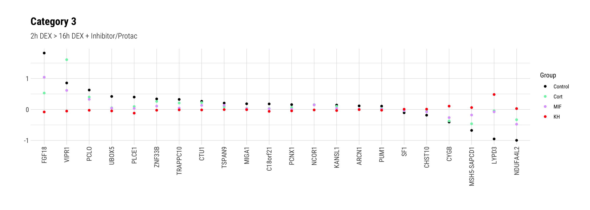
| Version | Author | Date |
|---|---|---|
| dd2072e | dominique-paul-uzh | 2022-06-22 |
ggsave(filename="../data/00_paper_figures/6d2c.png", width = 14, height=5)4. Only those genes which are significant in Dex 18h, and are significant in the opposite direction as Dex 18h in all three conditions of 2h dex>KH-103, 2h dex>MIF, 2h dex>Cort113
merged216$category4 <- (merged216$FDR < 0.05) &
(merged216$logFC * merged216$logFC_KH < 0) & (merged216$FDR_KH < 0.05) & # KH is significant in other direction as 2h DEX
(merged216$logFC * merged216$logFC_MIF < 0) & (merged216$FDR_MIF < 0.05) & # MIF is significant in other direction as 2h DEX
(merged216$logFC * merged216$logFC_cort < 0) & (merged216$FDR_cort < 0.05) # cort is significant in other direction as 2h DEX
rnames_flipped_cat4 <- merged216 %>% dplyr::filter(category4 == TRUE) %>% pull(rowname)
# fig 6d.2d
plot_logFCs_216(rnames_flipped_cat4, "Category 4")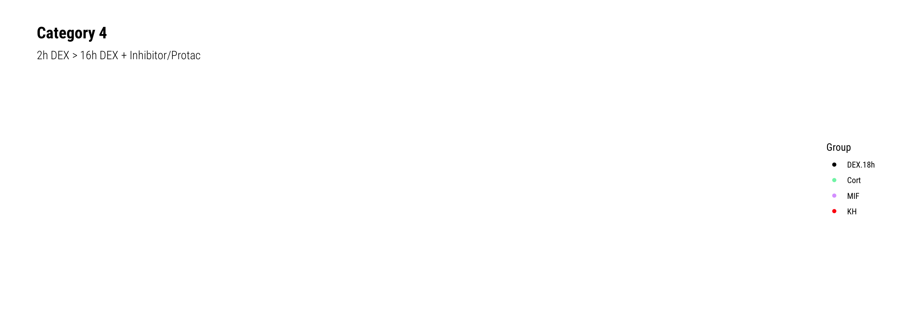
ggsave(filename="../data/00_paper_figures/6d2d.png", width = 14, height=5)16h > 2h
Def. 2: “Is DE from 16h DEX > 2h DEX+DMSO but is not DE in 16h DEX > 2h DEX+Cort113 experiment”
# Load inhibitors/Protac data
cort162 <- res_int_all[["16h Cort113 > 2h DEX+Cort113"]]
mif162 <- res_int_all[[ "16h MIF > 2h DEX+MIF"]]
protac162 <- res_int_all[["16h KH-103 > 2h DEX+KH-103"]]
# merge the respective FDRs onto DF
merged162 <- control162 %>%
tibble::rownames_to_column() %>%
left_join(cort162 %>%
tibble::rownames_to_column() %>%
dplyr::select(rowname, logFC, FDR), suffix=c("","_cort"), by="rowname") %>%
left_join(mif162 %>%
tibble::rownames_to_column() %>%
dplyr::select(rowname, logFC, FDR), suffix=c("","_MIF"), by="rowname") %>%
left_join(protac162 %>%
tibble::rownames_to_column() %>%
dplyr::select(rowname, logFC, FDR), suffix=c("","_KH"), by="rowname")
# Using a FDR of 0.05, how many clear reversals do we have?
merged162$cort_reversed <- ifelse(merged162$FDR < 0.05 & merged162$FDR_cort >= 0.05, TRUE, FALSE)
merged162$MIF_reversed <- ifelse(merged162$FDR < 0.05 & merged162$FDR_MIF >= 0.05, TRUE, FALSE)
merged162$KH_reversed <- ifelse(merged162$FDR < 0.05 & merged162$FDR_KH >= 0.05, TRUE, FALSE)
# transform from wide to long
merged162_long <- reshape2::melt(merged162,
id.vars="rowname",
measure.vars=c("logFC", "logFC_cort", "logFC_MIF", "logFC_KH")) %>%
mutate(Group=factor(variable))
levels(merged162_long$Group) <- c("Control", "Cort", "MIF", "KH")
# sort rownames in descending order of control logFCs
rnames <- merged162_long[merged162_long$Group == "Control",] %>% arrange(desc(value)) %>% pull(rowname)
merged162_long$rowname <- factor(merged162_long$rowname, levels=rnames)
# unique protac reversals
merged162 <- merged162 %>% arrange(logFC)
rnames_kh_reversal <- merged216[merged162$KH_reversed == TRUE &
merged162$cort_reversed == F &
merged162$MIF_reversed == F,"rowname"]
merged162[merged162$rowname %in% rnames_kh_reversal,"KH_reversed"] <- TRUEBecause we have a lot of genes to show in one plot for the 16h > 2h experiment, we split them into two groups. One plot shows the genes for which the control logFC is >0 and the other <0.
# split the long formatted dataset into two groups
data_plt <- merged162_long[merged162_long$rowname %in% rnames_kh_reversal,]
data <- data_plt[data_plt$Group == "Control",]
rnames_plt1 <- data[data$value > 0,"rowname"]
rnames_plt2 <- data[data$value <= 0,"rowname"]
data_plt1 <- data_plt[data_plt$rowname %in% rnames_plt1,]
data_plt2 <- data_plt[data_plt$rowname %in% rnames_plt2,]
plt2_1 <- ggplot(data_plt1) +
geom_point(aes(x=rowname, y=value, color=Group)) +
theme_ipsum_rc() +
labs(title="Genes reversed by Protac but not by inhibitors",
subtitle="16h Inhibitor/Protac > 2h Inhibitor/Protac + DEX",
x="", y="") +
theme(axis.text.x = element_text(angle = 90, vjust = 0.5, hjust=1)) +
scale_color_manual(values=c(Control="Black", Cort="#7ef2b4", MIF="#dda6ff", KH="#ff000d"))
plt2_2 <- ggplot(data_plt2) +
geom_point(aes(x=rowname, y=value, color=Group)) +
theme_ipsum_rc() +
labs(title="Genes reversed by Protac but not by inhibitors",
subtitle="16h Inhibitor/Protac > 2h Inhibitor/Protac + DEX",
x="", y="") +
theme(axis.text.x = element_text(angle = 90, vjust = 0.5, hjust=1)) +
scale_color_manual(values=c(Control="Black", Cort="#7ef2b4", MIF="#dda6ff", KH="#ff000d"))
# show the plots
plt2_1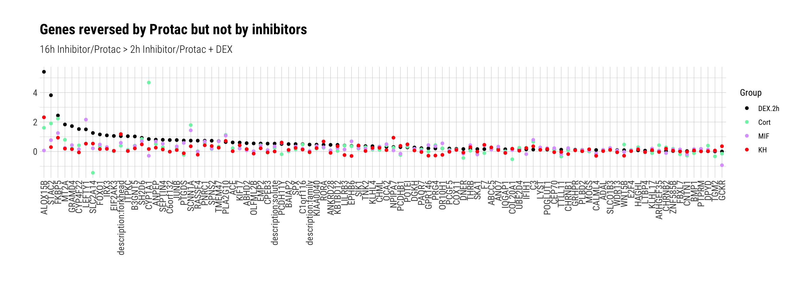
plt2_2
ggsave(file="../docs/assets/Q3_2_reversal162_p1.png", plt2_1, width=24, height=8)
ggsave(file="../docs/assets/Q3_3_reversal162_p2.png", plt2_2, width=24, height=8)Sign flips / reversals
We search for cases where an inhibitor or the protac has flipped the sign of a logFC. We filter for genes where the gene was DE in both the comparison with the control as well as inhibitor/protac. We apply the additional filter than the sign of the logFC has changed with reference to the control experiment.
# Check for flips in sign
merged162$cort_flipped <- ifelse(merged162$FDR < 0.05 & merged162$FDR_cort < 0.05 &
((merged162$logFC * merged162$logFC_cort) < 0), TRUE, FALSE)
merged162$MIF_flipped <- ifelse(merged162$FDR < 0.05 & merged162$FDR_MIF < 0.05 &
((merged162$logFC * merged162$logFC_MIF) < 0), TRUE, FALSE)
merged162$KH_flipped <- ifelse(merged162$FDR < 0.05 & merged162$FDR_KH < 0.05 &
((merged162$logFC * merged162$logFC_KH) < 0), TRUE, FALSE)
plot_logFCs_162 <- function(rownames_subset, title){
# cort
plt <- ggplot(merged162_long[merged162_long$rowname %in% rownames_subset,]) +
geom_point(aes(x=rowname, y=value, color=Group)) +
theme_ipsum_rc() +
labs(title=title,
subtitle="2h DEX > 16h DEX + Inhibitor/Protac",
x="", y="") +
theme(axis.text.x = element_text(angle = 90, vjust = 0.5, hjust=1)) +
scale_color_manual(values=c(Control="Black", Cort="#7ef2b4", MIF="#dda6ff", KH="#ff000d"))
plt
}
rnames_flipped_cort <- merged162 %>% dplyr::filter(cort_flipped == TRUE) %>% pull(rowname)
rnames_flipped_mif <- merged162 %>% dplyr::filter(MIF_flipped == TRUE) %>% pull(rowname)
rnames_flipped_kh <- merged162 %>% dplyr::filter(KH_flipped == TRUE) %>% pull(rowname)
print(kableExtra::kable(data.frame("Inhibitor"=c("Cort only", "MIF only", "KH only"),
"length"=c(length(rnames_flipped_cort),
length(rnames_flipped_mif),
length(rnames_flipped_kh)))))| Inhibitor | length |
|---|---|
| Cort only | 34 |
| MIF only | 27 |
| KH only | 1 |
plt_flipped_cort <- plot_logFCs_162(rnames_flipped_cort, "Genes flipped by cort")
plt_flipped_mif <- plot_logFCs_162(rnames_flipped_mif, "Genes flipped by MIF")
plt_flipped_kh <- plot_logFCs_162(rnames_flipped_kh, "Genes flipped by KH")
# Save all plots
ggsave(file="../docs/assets/Q3_1_flipped_cort_216.png", plt_flipped_cort, width=12, height=7)
ggsave(file="../docs/assets/Q3_1_flipped_mif_216.png", plt_flipped_mif, width=12, height=7)
ggsave(file="../docs/assets/Q3_1_flipped_kh_216.png", plt_flipped_kh, width=12, height=7)
# Show all plots
cat("\n\n### Flipped effects {.tabset} \n\n")Flipped effects
cat("\n\n#### Cort \n\n")Cort
plt_flipped_cort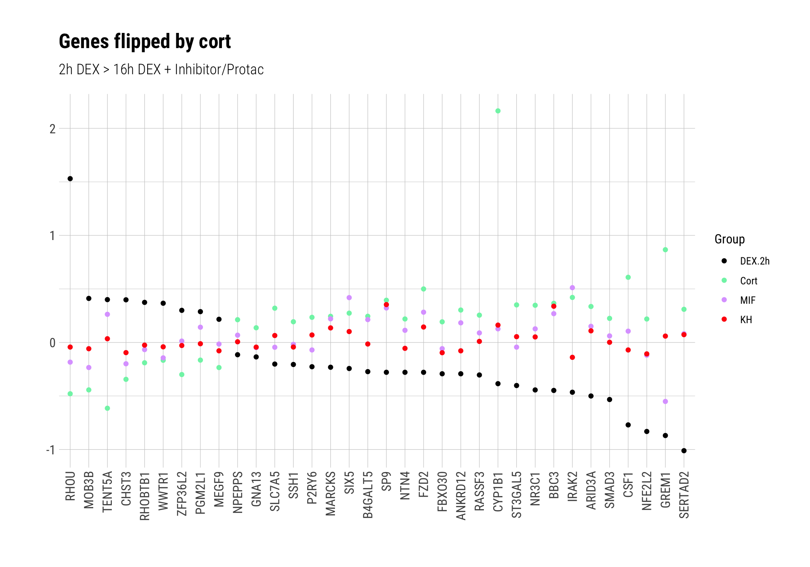
cat("\n\n#### MIF \n\n")MIF
plt_flipped_mif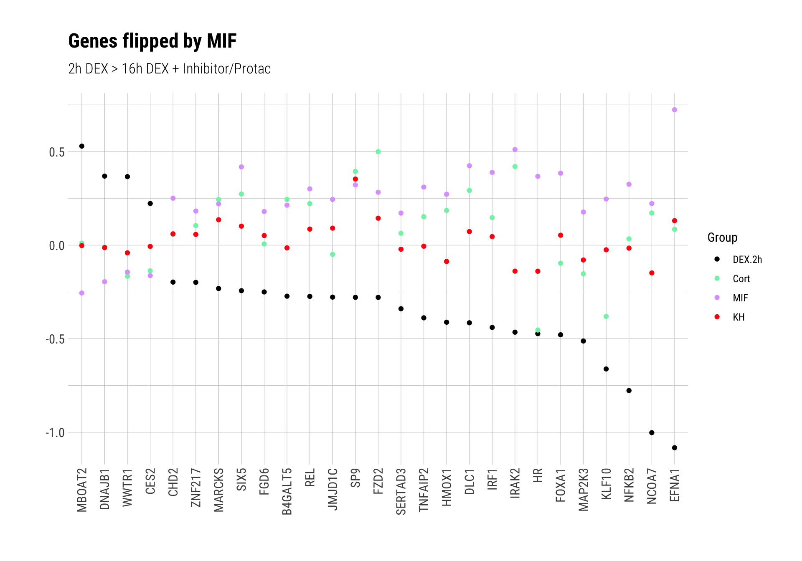
cat("\n\n#### KH \n\n")KH
plt_flipped_kh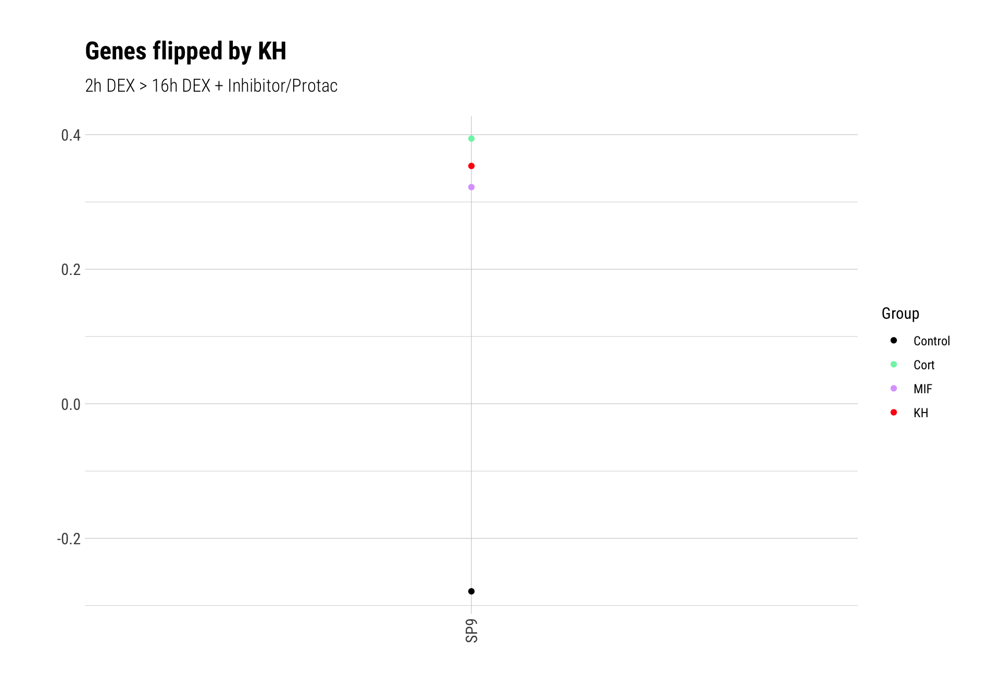
# plot genes flipped by the respective markers only
rnames_flipped_cort_only <- rnames_flipped_cort[!(rnames_flipped_cort %in% c(rnames_flipped_mif, rnames_flipped_kh))]
rnames_flipped_mif_only <- rnames_flipped_mif[!(rnames_flipped_mif %in% c(plt_flipped_kh, rnames_flipped_kh))]
rnames_flipped_kh_only <- rnames_flipped_mif[!(rnames_flipped_mif %in% c(rnames_flipped_mif, plt_flipped_cort))]
print(kableExtra::kable(data.frame("Inhibitor"=c("Cort only", "MIF only", "KH only"),
"length"=c(length(rnames_flipped_cort_only),
length(rnames_flipped_mif_only),
length(rnames_flipped_kh_only)))))| Inhibitor | length |
|---|---|
| Cort only | 27 |
| MIF only | 26 |
| KH only | 0 |
plt_flipped_cort_only <- plot_logFCs_162(rnames_flipped_cort_only, "Genes flipped by cort only")
plt_flipped_mif_only <- plot_logFCs_162(rnames_flipped_mif_only, "Genes flipped by MIF only")
plt_flipped_kh_only <- plot_logFCs_162(rnames_flipped_kh_only, "Genes flipped by KH only")
# Save all plots
ggsave(file="../docs/assets/Q3_1_flipped_cort_only_216.png", plt_flipped_cort_only, width=12, height=7)
ggsave(file="../docs/assets/Q3_1_flipped_mif_only_216.png", plt_flipped_mif_only, width=12, height=7)
ggsave(file="../docs/assets/Q3_1_flipped_kh_only_216.png", plt_flipped_kh_only, width=12, height=7)
# Show all plots
cat("\n\n### Flipped effects with unique genes per treatment {.tabset} \n\n")Flipped effects with unique genes per treatment
cat("\n\n#### Cort \n\n")Cort
plt_flipped_cort_only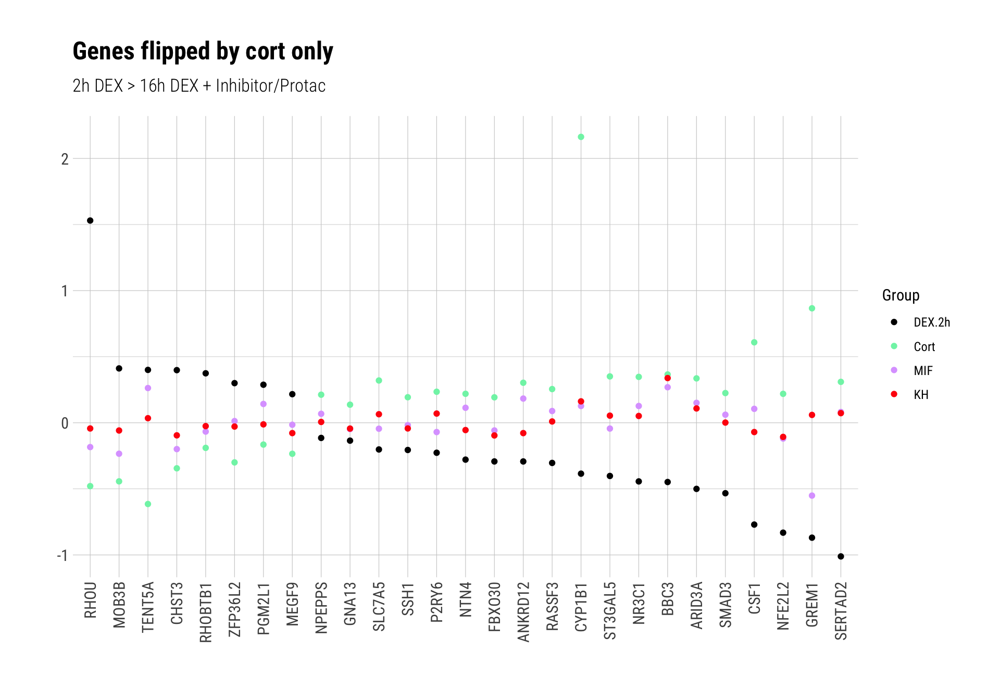
cat("\n\n#### MIF \n\n")MIF
plt_flipped_mif_only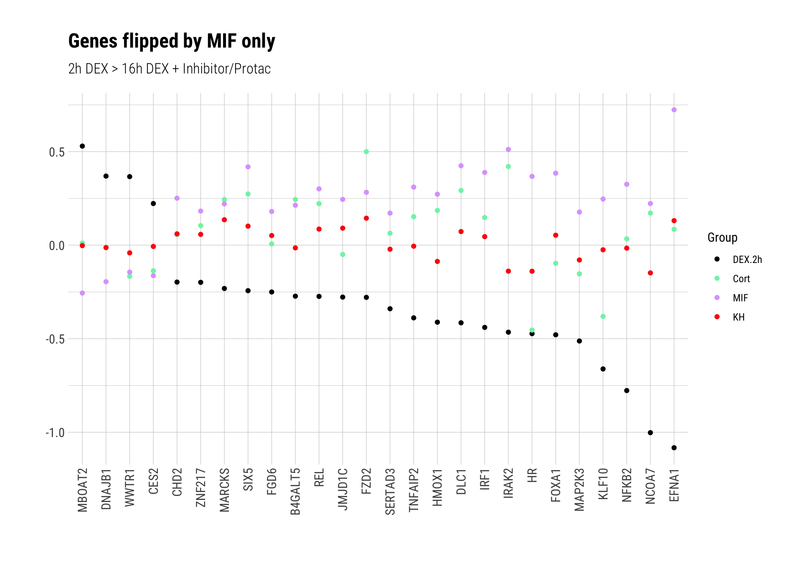
cat("\n\n#### KH \n\n")KH
plt_flipped_kh_only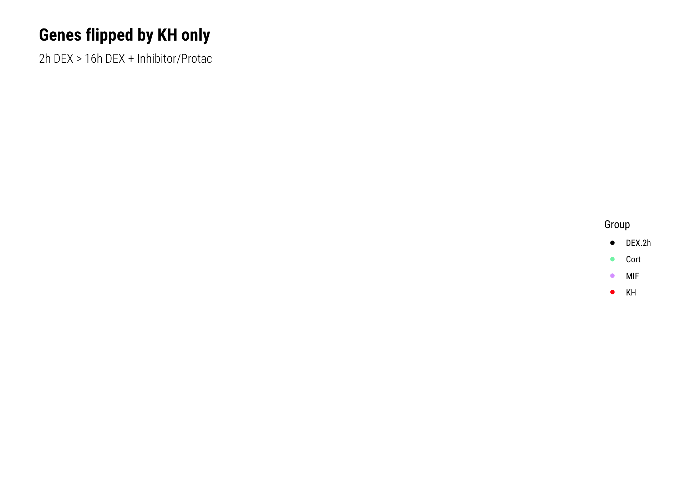
Plots according to document
Only those genes which are significant in Dex 2h, ns in KH103>2h dex but are significant in the same direction (+/-) as Dex 2h in mif>2h dex and cort>2h dex
merged162$category1 <- (merged162$FDR < 0.05) &
(merged162$FDR_KH > 0.05) &
(merged162$FDR_MIF < 0.05) & (merged162$FDR_cort < 0.05) &
(merged162$logFC_MIF * merged162$logFC_cort > 0) & # checks that mif and cort have same sign
(merged162$logFC * merged162$logFC_cort > 0) # checks that mif and 2h dex have the same sign
rnames_flipped_cat1 <- merged162 %>% dplyr::filter(category1 == TRUE) %>% pull(rowname)
# fig 6c.2a
plot_logFCs_162(rnames_flipped_cat1, "Category 1")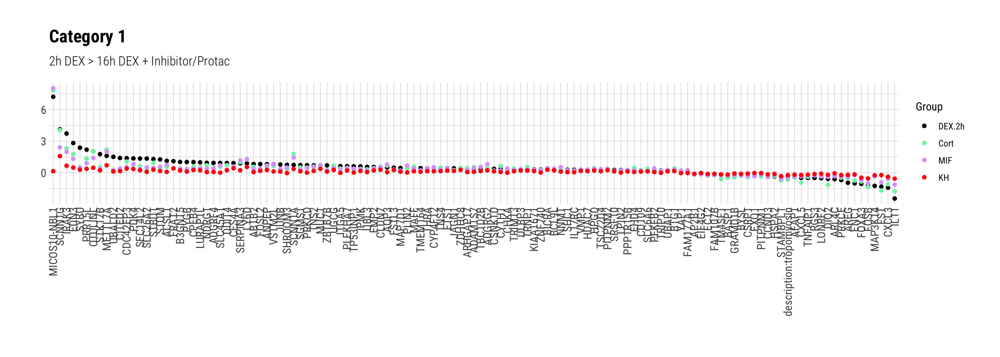
ggsave(filename="../data/00_paper_figures/6c2a.png", width = 14, height=5)Only those genes which are significant in Dex 2h, ns in KH103>2h dex but are significant in the opposite direction as Dex 2h in mif>2h dex and cort113>2h dex
merged162$category2 <- (merged162$FDR < 0.05) &
(merged162$FDR_KH > 0.05) &
(merged162$FDR_MIF < 0.05) & (merged162$FDR_cort < 0.05) &
(merged162$logFC_MIF * merged162$logFC_cort > 0) & # checks that mif and cort have same sign
(merged162$logFC * merged162$logFC_cort < 0) # checks that mif and 2h dex have different sign
rnames_flipped_cat2 <- merged162 %>% dplyr::filter(category2 == TRUE) %>% pull(rowname)
# fig 6c.2b
plot_logFCs_162(rnames_flipped_cat2, "Category 2")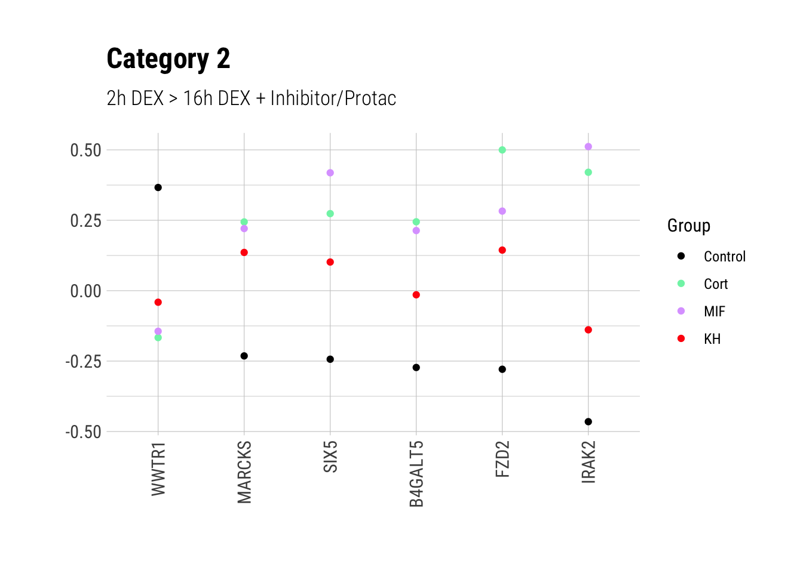
ggsave(filename="../data/00_paper_figures/6c2b.png", width = 7, height=5)Only those genes which are significant in Dex 2h, ns or significant in same direction as Dex 2h for mif>2h dex and cort113>2h dex but are significant in the opposite direction as Dex 2h in KH-103>2h dex
merged162$category3 <- (merged162$FDR < 0.05) &
(merged162$logFC * merged162$logFC_MIF > 0) & # 2h DEX and MIF point in same direction
(merged162$logFC * merged162$logFC_cort > 0) & # 2h DEX and cort point in same direction
(merged162$logFC * merged162$logFC_KH < 0) & # 2h DEX and KH have different logFC signs
(merged162$FDR_KH > 0) # KH is significant
rnames_flipped_cat3 <- merged162 %>% dplyr::filter(category3 == TRUE) %>% pull(rowname)
# fig 6c.2c
plot_logFCs_162(rnames_flipped_cat3, "Category 3")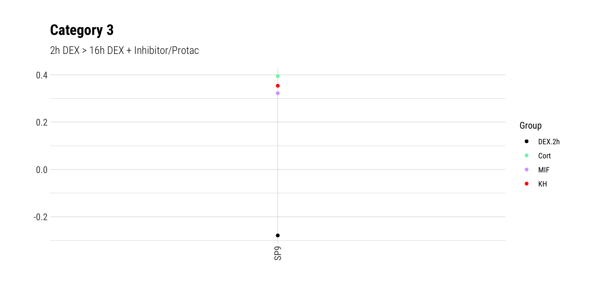
ggsave(filename="../data/00_paper_figures/6c2c.png", width = 14, height=5)Only those genes which are significant in Dex 2h, and are significant in the opposite direction as Dex 2h in all three conditions of KH-103>2h dex, MIF>2h dex, Cort113>2h dex
merged162$category4 <- (merged162$FDR < 0.05) &
(merged162$logFC * merged162$logFC_KH < 0) & (merged162$FDR_KH < 0.05) & # KH is significant in other direction as 2h DEX
(merged162$logFC * merged162$logFC_MIF < 0) & (merged162$FDR_MIF < 0.05) & # MIF is significant in other direction as 2h DEX
(merged162$logFC * merged162$logFC_cort < 0) & (merged162$FDR_cort < 0.05) # cort is significant in other direction as 2h DEX
rnames_flipped_cat4 <- merged162 %>% dplyr::filter(category4 == TRUE) %>% pull(rowname)
# fig 6c.2d
plot_logFCs_162(rnames_flipped_cat4, "Category 4")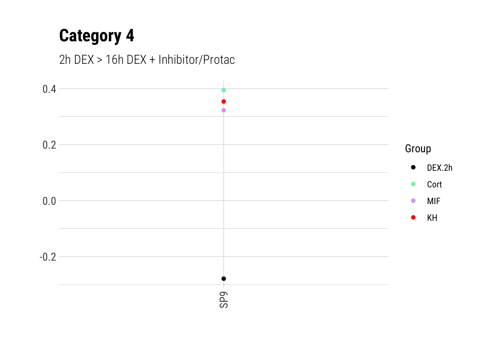
ggsave(filename="../data/00_paper_figures/6c2d.png", width = 7, height=5)Save file to excel
# setup excel file
wb <- createWorkbook()
# add worksheets and add data
addWorksheet(wb, sheetName = "2h>16h")
addWorksheet(wb, sheetName = "16h>2h")
writeData(wb, "2h>16h", merged216)
writeData(wb, "16h>2h", merged162)
# write final excel to disk
saveWorkbook(wb, "../docs/downloads/Q3_protac_flipped_DE.xlsx", overwrite=TRUE)
sessionInfo()R version 4.1.0 (2021-05-18)
Platform: x86_64-apple-darwin17.0 (64-bit)
Running under: macOS Big Sur 10.16
Matrix products: default
BLAS: /Library/Frameworks/R.framework/Versions/4.1/Resources/lib/libRblas.dylib
LAPACK: /Library/Frameworks/R.framework/Versions/4.1/Resources/lib/libRlapack.dylib
locale:
[1] en_US.UTF-8/en_US.UTF-8/en_US.UTF-8/C/en_US.UTF-8/en_US.UTF-8
attached base packages:
[1] stats graphics grDevices utils datasets methods base
other attached packages:
[1] ggplot2_3.3.6 hrbrthemes_0.8.6 openxlsx_4.2.5 dplyr_1.0.9
loaded via a namespace (and not attached):
[1] Rcpp_1.0.8.3 svglite_2.1.0 assertthat_0.2.1 rprojroot_2.0.3
[5] digest_0.6.29 utf8_1.2.2 R6_2.5.1 plyr_1.8.7
[9] evaluate_0.15 httr_1.4.3 highr_0.9 pillar_1.7.0
[13] gdtools_0.2.4 rlang_1.0.3 rstudioapi_0.13 extrafontdb_1.0
[17] whisker_0.4 jquerylib_0.1.4 rmarkdown_2.14 textshaping_0.3.6
[21] labeling_0.4.2 webshot_0.5.3 extrafont_0.18 stringr_1.4.0
[25] munsell_0.5.0 compiler_4.1.0 httpuv_1.6.5 xfun_0.31
[29] pkgconfig_2.0.3 systemfonts_1.0.4 htmltools_0.5.2 tidyselect_1.1.2
[33] tibble_3.1.7 workflowr_1.7.0 viridisLite_0.4.0 fansi_1.0.3
[37] crayon_1.5.1 withr_2.5.0 later_1.3.0 grid_4.1.0
[41] jsonlite_1.8.0 Rttf2pt1_1.3.10 gtable_0.3.0 lifecycle_1.0.1
[45] DBI_1.1.3 git2r_0.30.1 magrittr_2.0.3 scales_1.2.0
[49] zip_2.2.0 cli_3.3.0 stringi_1.7.6 farver_2.1.1
[53] reshape2_1.4.4 fs_1.5.2 promises_1.2.0.1 xml2_1.3.3
[57] bslib_0.3.1 ellipsis_0.3.2 ragg_1.2.2 generics_0.1.3
[61] vctrs_0.4.1 kableExtra_1.3.4 tools_4.1.0 glue_1.6.2
[65] purrr_0.3.4 fastmap_1.1.0 yaml_2.3.5 colorspace_2.0-3
[69] rvest_1.0.2 knitr_1.39 sass_0.4.1